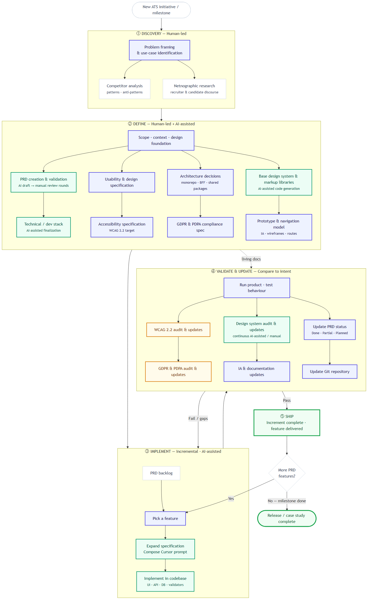
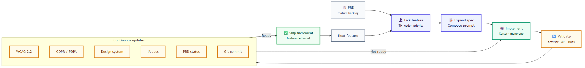

This documents how an ATS was designed and built with AI-assisted implementation and human-led product judgment. After Ship, the cycle returns to Stage 3 for the next PRD feature until release scope is complete.
Five-stage overview
Human vs AI ownership
Product judgment, domain rules, and QA remain explicitly human-owned. AI accelerates specification drafting, codegen, and audit passes.
End-to-end process diagram

Discovery and definition are human-led and evidence-backed. Implementation is incremental: each PRD feature is expanded into a specification and Cursor prompt before AI-assisted coding. Validation compares the running product to intent before an increment ships.
Feature increment loop
Stages 3–5 repeat for every TH-coded backlog item until milestone scope is met.

PRD → Pick a feature → Expand specification / compose Cursor prompt → Implement
Stage detail
Discovery
Problem framing and use-case identification
- Competitor analysis — patterns from Greenhouse, Lever, Ashby, SMB tools; what to adopt vs avoid
- Netnographic research — public discourse on recruiter and candidate pain
Define scope & specification
Establish the contract before code
PRD drafts, stack decisions, interaction spec, WCAG 2.2 AA intent, architecture, privacy criteria, design system, and IA — see workstreams table below.
Implementation
Always incremental against the PRD
- Features tracked with TH- codes in FEATURE_BACKLOG
- Prompts pre-written per feature in FEATURE_BACKLOG_CURSOR_PROMPTS
- AI generates React, API routes, validators, migrations — human edits for business rules and cohesion
Validation & updates
Compare running product to intent
- WCAG 2.2 audit and remediation (rev 1.1)
- GDPR & PDPA audit and remediation
- Design system catalog updates when new components ship
- Information architecture aligned with routes
- PRD marked Done / Partial / Planned · Git commits as implementation truth
Ship
Increment complete
Feature delivered: behaviour matches spec, docs updated, code merged. Pick next PRD feature and re-enter the increment loop until milestone or release scope is met.
Define — workstreams
| Workstream | Approach | Artefacts |
|---|---|---|
| PRD | AI draft + manual review | PRD.md |
| Dev stack | AI-assisted research | npm monorepo, Next.js, Hono, Prisma, PostgreSQL |
| Usability & interaction spec | Human-led | Task flows, interaction handoff, state requirements |
| Accessibility spec | Human-led target | WCAG 2.2 AA intent |
| Architecture | Human decision | Monorepo, BFF pattern, shared packages |
| Data protection | Human-led spec | GDPR / PDPA audit criteria |
| Design system & markup | AI-assisted codegen | Design system, static markup libraries |
| Prototype & navigation | Human-led IA | Information architecture |
Validation hub
Stage ④ compares the running product against intent across six parallel tracks.